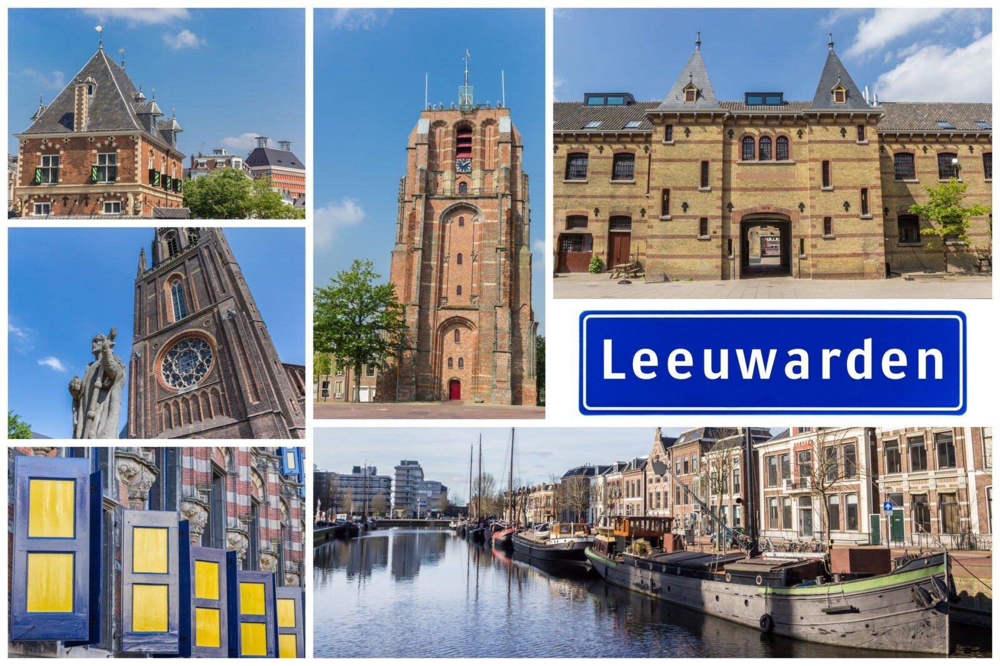

Iedere provincie heeft zo zijn eigen activiteiten om te doen.
Zeeland staat bekend om het vele water, Waterpark Neeltje Jans en de vele stranden die hier te vinden zijn.
Veel mensen gaan hier graag naar toe om te wandelen, te fietsen en om even heerlijk uit te waaien.
Er zijn ook mensen die graag willen winkelen, dan gaan veel mensen naar Amsterdam, of ze bezoeken Utrecht.
Alle steden hebben wel een leuke stad waar volop gewinkeld kan worden.
De provincies in Nederland hebben allemaal hun eigen kenmerken waardoor ze uniek worden en blijven.
De vraag welke provincie in Nederland is nu het mooiste kan aan iedereen gesteld worden en deze vraag zal ook tien keer verschillend worden beantwoord.
Sommige mensen zullen de provincie waar zij wonen erg mooi vinden, maar mensen die zich graag in de natuur bevinden zullen de provincies in en rondom de Veluwe aangeven.
Mensen die van de zee houden zullen wellicht kiezen voor Noord-Holland, Zuid-Holland en Zeeland.
Zijn er mensen die liever gaan fietsen en houden van hoog en laag, dan is Limburg hier weer een geschikte mogelijkheid voor.
Het ligt er daarom ook maar net aan waar dat de mensen naar toe gaan en waar ze van houden.
Als je nog niet alle provincies in Nederland bezocht hebt kun je de vraag ook nog niet goed beantwoorden.
Het is daarom goed om eens te gaan kijken welke mogelijkheden er zijn en dan kun je de vraag welke provincie jij het mooiste vindt van Nederland eens gaan beantwoorden.
Beschrijf iedere keer eens welke plaatsen in de provincie je mooi vindt en daar kun je dan eens vaker naar toe gaan.
Het maakt niet uit naar welke provincie je graag gaat, ze zijn allemaal goed te bereiken met de auto of met het openbaar vervoer.
Het is daarom goed om te kijken welke mogelijkheden er zijn en dan eens te kijken welke mogelijkheden je nog niet kent.
Je zou ook eens met het vliegtuig van het zuiden naar het noorden van Nederland kunnen vliegen, ook dat is een optie die veel mensen nog niet hebben gedaan.
Op deze manier leer je de provincies in Nederland eens op een andere manier kennen, namelijk van bovenaf.
Groningen
Groningen
De eerste hoofdstad is Groningen, en draagt dezelfde naam als de provincie zelf.
Groningen is een middelgrote stad met circa 580.000 inwoners, en maakt de laatste jaren een behoorlijke groei mee.
In Groningen bevinden zich een aantal overheidsinstanties die daar het hoofdkantoor hebben, zoals DUO.
De stad is verder in trek bij veel studenten, die ervoor kiezen om aan de universiteit of hogeschool van Groningen te studeren.
Friesland
Leeuwarden

Leeuwarden en Groningen zijn buren. De typerende hoofdstad van Friesland is voor veel mensen een plek die onafhankelijk is en een eigen karakter heeft.
Het is ook een geliefde stad bij toeristen, die graag een weekendje in het noorden spenderen.
De hoofdstad van Friesland ligt centraal gelegen in de provincie, en bestaat al heel lang.
Het is een van de oudste steden van Nederland, en was zelfs in de Middeleeuwen al een belangrijke hoofdstad.
Drenthe
Assen
Assen is een van de kleinere hoofdsteden van Nederland, en ligt in de provincie Drenthe.
Tien jaar geleden vierde Assen zijn tweehonderdjarig bestaan, toen de stad van de Fransen stadsrechten kreeg.
De stad telt 67.000 inwoners, die Assenaren worden genoemd, en veelal hun hele leven in de stad blijven wonen.
Het meest bekende evenement van de provinciehoofdstad zijn de jaarlijkse motorraces, de TT van Assen.
Overijssel
Zwolle
Zwolle is de hoofdstad van Overijssel, en ligt in het oosten van Nederland.
Zwolle is een kenmerkende stad met rijke historie die de laatste tientallen jaren zeer hard is gegroeid.
Veel bedrijven zijn naar de stad verhuist vanwege het gunstige klimaat en betaalbare bedrijfsruimtes.
Zwolle staat bekend om zijn gezellige stadscentrum, waar je uitstekende restaurants kunt vinden.
Flevoland
Lelystad
Lelystad is de nieuwste hoofdstad van een provincie in Nederland. De stad is pas in 1967 gesticht, toen de ontpoldering van de provincie Flevoland was afgerond.
De hoofdstad van de provincie blijft groeien, dit komt mede door het tekort aan betaalbare woningen in Amsterdam en Utrecht.
Veel mensen hebben ervoor gekozen om uit te wijken naar deze nieuwere, betaalbare stad.
Gelderland
Arnhem
Arnhem mag zich de hoofdstad van de provincie Gelderland noemen en is een van de grootste gemeenten van Nederland.
Arnhem kreeg als een van de eerste Nederlandse plekken stadsrechten in 1233.
Qua inrichting en architectuur zie je in deze hoofdstad veel nieuwere gebouwen.
Dit komt omdat Arnhem tijdens de tweede wereldoorlog deels werd verwoest door bombardementen.
Daarnaast werden veel oude wijken in de jaren 80 opnieuw opgeknapt, en is Arnhem uitgegroeid tot een prachtige stad.
Utrecht
Utrecht
Utrecht ligt in de provincie Utrecht, logisch toch.
De hoofdstad van de gelijknamige provincie wordt vaak vergeleken met haar grotere broer Amsterdam, maar de twee steden verschillen veel van elkaar.
De stad is de zetel van de provincie, en eentje waar ze qua indelingen van publieke ruimtes en openbaar vervoer een voortrekkersrol spelen.
Utrecht is een van de grotere hoofdsteden van Nederland, en maakt nog steeds een sterke groei door.
Noord-Holland
Haarlem
Haarlem is de hoofdstad van Nederland. Veel mensen denken dat Amsterdam de hoofdstad van Noord-Holland is, maar dit is niet waar.
Haarlem telt 161.000 inwoners, en is steeds meer in trek omdat het zo dicht bij Amsterdam ligt.
De oude stad, die al in 1270 stadsrechten kreeg, heeft door de honderden jaren heen een belangrijke rol in de Nederlandse politiek gespeeld.
Haarlem is en was een zeer belangrijke stad, waar veel voorlopers van onze huidige wetten zijn besloten.
Zuid-Holland
Den Haag
Den Haag is de belangrijkste stad van Nederland op het gebied van politiek.
Het is de hoofdstad van de provincie Zuid-Holland, en ook de plaats waar de Nederlandse regering zich bevindt.
Het is dan ook niet gek dat Den Haag een zeer internationale stad is.
Bijna alle ambassades van diverse landen bevinden zich in Den Haag, en veel multinationals hebben er een vestiging.
Hoewel de regering gevestigd is in deze stad, blijft Amsterdam de hoofdstad van Nederland.
Zeeland
Middelburg
De kleinste provincie hoofdstad van Nederland is Middelburg.
De stad is gelegen in de provincie Zeeland, in het gebied wat Midden-Zeeland wordt genoemd.
Ook Middelburg is een stad die al heel wat jaren bestaat, met sporen die terug dateren tot in de 8ste eeuw.
Het is niet de grootste stad van Zeeland, maar het is historisch gezien altijd de plaats van de politieke zetel van de regio.
Noord-Brabant
's-Hertogenbosch
De administratieve hoofdstad van Noord-Brabant is het charmante ‘s-Hertogenbosch, ook wel Den Bosch genoemd.
Het is een van de oudste provincie hoofdsteden, die door Engeland in 1815 al werd benoemd tot hoofdstad van de provincie.
‘s-Hertogenbosch telt circa 154.000 inwoners, en de mensen die er wonen houden van hun stad.
Het is dan ook een van de gezelligste hoofdsteden om een dagje te shoppen of een weekendje in te overnachten.
Limburg
Maastricht
De laatste hoofdstad op onze lijst is Maastricht, de meest zuidelijke in dit lijstje.
De stad is de hoofdstad van de provincie Limburg, en verkreeg deze titel net zoals ‘s-Hertogenbosch in 1815 toen de Engelsen het als hoofdstad van Limburg benoemden.
Maastricht is een eigenzinnige hoofdstad waar je nog een echt bourgondisch sfeertje kunt ontdekken.
Veel Nederlanders gaan graag een paar dagen naar de omgeving van Maastricht, die niet zo vlak is als de rest van Nederland.
Het hoogtepunt voor veel inwoners van de hoofdstad van Limburg is het jaarlijks terugkerende carnaval in Mestreech.
 Nederland telt in totaal 12 provincies.
Het gaat hierbij over Groningen, Friesland, Drenthe, Overijssel, Flevoland, Gelderland, Utrecht, Noord-Holland, Zuid-Holland, Zeeland, Noord-Brabant en Limburg.
Op de basisschool leren de kinderen welke provincies er bestaan en wat de hoofdsteden zijn.
Nederland telt in totaal 12 provincies.
Het gaat hierbij over Groningen, Friesland, Drenthe, Overijssel, Flevoland, Gelderland, Utrecht, Noord-Holland, Zuid-Holland, Zeeland, Noord-Brabant en Limburg.
Op de basisschool leren de kinderen welke provincies er bestaan en wat de hoofdsteden zijn.